Polar Coordinates: Graphs
The planets move through space in elliptical, periodic orbits about the sun, as shown in Figure 1. They are in constant motion, so fixing an exact position of any planet is valid only for a moment. In other words, we can fix only a planet’s instantaneous position. This is one application of polar coordinates, represented as We interpret as the distance from the center of the sun and as the planet’s angular bearing, or its direction from the center of the sun. In this section, we will focus on the polar system and the graphs that are generated directly from polar coordinates.
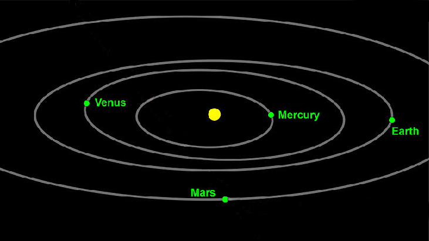
Testing Polar Equations for Symmetry
Just as a rectangular equation such as describes the relationship between and on a Cartesian grid, a polar equation describes a relationship between and on a polar grid. Recall that the coordinate pair indicates that we move counterclockwise from the polar axis (positive x-axis) by an angle of and extend a ray from the pole (origin) units in the direction of All points that satisfy the polar equation are on the graph.
Symmetry is a property that helps us recognize and plot the graph of any equation. If an equation has a graph that is symmetric with respect to an axis, it means that if we folded the graph in half over that axis, the portion of the graph on one side would coincide with the portion on the other side. By performing three tests, we will see how to apply the properties of symmetry to polar equations. Further, we will use symmetry (in addition to plotting key points, zeros, and maximums of to determine the graph of a polar equation.
In the first test, we consider symmetry with respect to the line (y-axis). We replace with to determine if the new equation is equivalent to the original equation. For example, suppose we are given the equation
This equation exhibits symmetry with respect to the line
In the second test, we consider symmetry with respect to the polar axis ( -axis). We replace with or to determine equivalency between the tested equation and the original. For example, suppose we are given the equation
The graph of this equation exhibits symmetry with respect to the polar axis.
In the third test, we consider symmetry with respect to the pole (origin). We replace with to determine if the tested equation is equivalent to the original equation. For example, suppose we are given the equation
The equation has failed the symmetry test, but that does not mean that it is not symmetric with respect to the pole. Passing one or more of the symmetry tests verifies that symmetry will be exhibited in a graph. However, failing the symmetry tests does not necessarily indicate that a graph will not be symmetric about the line the polar axis, or the pole. In these instances, we can confirm that symmetry exists by plotting reflecting points across the apparent axis of symmetry or the pole. Testing for symmetry is a technique that simplifies the graphing of polar equations, but its application is not perfect.
Testing a Polar Equation for Symmetry
Test the equation for symmetry.
Solution
Test for each of the three types of symmetry.
| 1) Replacing with yields the same result. Thus, the graph is symmetric with respect to the line | |
| 2) Replacing with does not yield the same equation. Therefore, the graph fails the test and may or may not be symmetric with respect to the polar axis. | |
| 3) Replacing with changes the equation and fails the test. The graph may or may not be symmetric with respect to the pole. |
Graphing Polar Equations by Plotting Points
To graph in the rectangular coordinate system we construct a table of and values. To graph in the polar coordinate system we construct a table of and values. We enter values of into a polar equation and calculate However, using the properties of symmetry and finding key values of and means fewer calculations will be needed.
Finding Zeros and Maxima
To find the zeros of a polar equation, we solve for the values of that result in Recall that, to find the zeros of polynomial functions, we set the equation equal to zero and then solve for We use the same process for polar equations. Set and solve for
For many of the forms we will encounter, the maximum value of a polar equation is found by substituting those values of into the equation that result in the maximum value of the trigonometric functions. Consider the maximum distance between the curve and the pole is 5 units. The maximum value of the cosine function is 1 when so our polar equation is and the value will yield the maximum
Similarly, the maximum value of the sine function is 1 when and if our polar equation is the value will yield the maximum We may find additional information by calculating values of when These points would be polar axis intercepts, which may be helpful in drawing the graph and identifying the curve of a polar equation.
Finding Zeros and Maximum Values for a Polar Equation
Using the equation in Example 1, find the zeros and maximum and, if necessary, the polar axis intercepts of
Solution
To find the zeros, set equal to zero and solve for
Substitute any one of the values into the equation. We will use
The points and are the zeros of the equation. They all coincide, so only one point is visible on the graph. This point is also the only polar axis intercept.
To find the maximum value of the equation, look at the maximum value of the trigonometric function which occurs when resulting in Substitute for
Analysis
The point will be the maximum value on the graph. Let’s plot a few more points to verify the graph of a circle. See Table 2 and Figure 4.
| 0 | ||
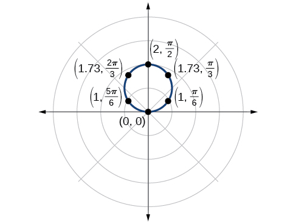
Investigating Circles
Now we have seen the equation of a circle in the polar coordinate system. In the last two examples, the same equation was used to illustrate the properties of symmetry and demonstrate how to find the zeros, maximum values, and plotted points that produced the graphs. However, the circle is only one of many shapes in the set of polar curves.
There are five classic polar curves: cardioids, limaҫons, lemniscates, rose curves, and Archimedes’ spirals. We will briefly touch on the polar formulas for the circle before moving on to the classic curves and their variations.
Sketching the Graph of a Polar Equation for a Circle
Sketch the graph of
Solution
First, testing the equation for symmetry, we find that the graph is symmetric about the polar axis. Next, we find the zeros and maximum for First, set and solve for . Thus, a zero occurs at A key point to plot is
To find the maximum value of note that the maximum value of the cosine function is 1 when Substitute into the equation:
The maximum value of the equation is 4. A key point to plot is
As is symmetric with respect to the polar axis, we only need to calculate r-values for over the interval Points in the upper quadrant can then be reflected to the lower quadrant. Make a table of values similar to Table 3. The graph is shown in Figure 6.
| 0 | |||||||||
| 4 | 3.46 | 2.83 | 2 | 0 | −2 | −2.83 | −3.46 | −4 |
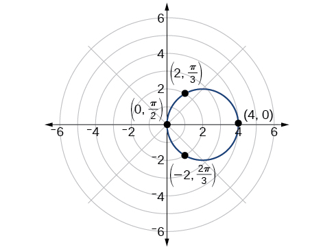
Investigating Cardioids
While translating from polar coordinates to Cartesian coordinates may seem simpler in some instances, graphing the classic curves is actually less complicated in the polar system. The next curve is called a cardioid, as it resembles a heart. This shape is often included with the family of curves called limaçons, but here we will discuss the cardioid on its own.
Sketching the Graph of a Cardioid
Sketch the graph of
Solution
First, testing the equation for symmetry, we find that the graph of this equation will be symmetric about the polar axis. Next, we find the zeros and maximums. Setting we have The zero of the equation is located at The graph passes through this point.
The maximum value of occurs when is a maximum, which is when or when Substitute into the equation, and solve for
The point is the maximum value on the graph.
We found that the polar equation is symmetric with respect to the polar axis, but as it extends to all four quadrants, we need to plot values over the interval The upper portion of the graph is then reflected over the polar axis. Next, we make a table of values, as in Table 4, and then we plot the points and draw the graph. See Figure 8.
| 4 | 3.41 | 2 | 1 | 0 |
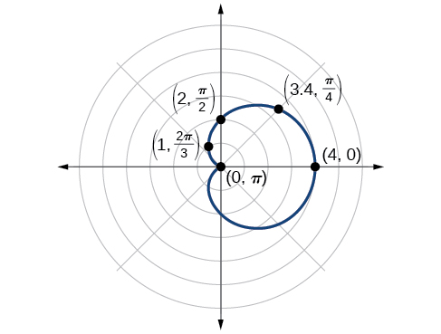
Investigating Limaçons
The word limaçon is Old French for “snail,” a name that describes the shape of the graph. As mentioned earlier, the cardioid is a member of the limaçon family, and we can see the similarities in the graphs. The other images in this category include the one-loop limaçon and the two-loop (or inner-loop) limaçon. One-loop limaçons are sometimes referred to as dimpled limaçons when and convex limaçons when
Sketching the Graph of a One-Loop Limaçon
Graph the equation
Solution
First, testing the equation for symmetry, we find that it fails all three symmetry tests, meaning that the graph may or may not exhibit symmetry, so we cannot use the symmetry to help us graph it. However, this equation has a graph that clearly displays symmetry with respect to the line yet it fails all the three symmetry tests. A graphing calculator will immediately illustrate the graph’s reflective quality.
Next, we find the zeros and maximum, and plot the reflecting points to verify any symmetry. Setting results in being undefined. What does this mean? How could be undefined? The angle is undefined for any value of Therefore, is undefined because there is no value of for which Consequently, the graph does not pass through the pole. Perhaps the graph does cross the polar axis, but not at the pole. We can investigate other intercepts by calculating when
So, there is at least one polar axis intercept at
Next, as the maximum value of the sine function is 1 when we will substitute into the equation and solve for Thus,
Make a table of the coordinates similar to Table 5.
| 4 | 2.5 | 1.4 | 1 | 1.4 | 2.5 | 4 | 5.5 | 6.6 | 7 | 6.6 | 5.5 | 4 |
The graph is shown in Figure 10.
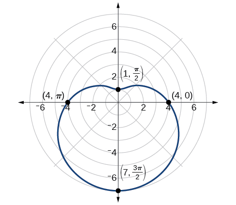
Analysis
This is an example of a curve for which making a table of values is critical to producing an accurate graph. The symmetry tests fail; the zero is undefined. While it may be apparent that an equation involving is likely symmetric with respect to the line evaluating more points helps to verify that the graph is correct.
Another type of limaçon, the inner-loop limaçon, is named for the loop formed inside the general limaçon shape. It was discovered by the German artist Albrecht Dürer(1471-1528), who revealed a method for drawing the inner-loop limaçon in his 1525 book Underweysung der Messing. A century later, the father of mathematician Blaise Pascal, Étienne Pascal(1588-1651), rediscovered it.
Sketching the Graph of an Inner-Loop Limaçon
Sketch the graph of
Solution
Testing for symmetry, we find that the graph of the equation is symmetric about the polar axis. Next, finding the zeros reveals that when The maximum is found when or when Thus, the maximum is found at the point (7, 0).
Even though we have found symmetry, the zero, and the maximum, plotting more points will help to define the shape, and then a pattern will emerge.
See Table 6.
| 7 | 6.3 | 4.5 | 2 | −0.5 | −2.3 | −3 | −2.3 | −0.5 | 2 | 4.5 | 6.3 | 7 |
As expected, the values begin to repeat after The graph is shown in Figure 12.
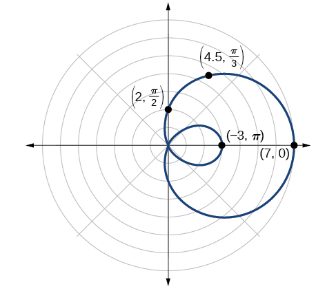
Investigating Lemniscates
The lemniscate is a polar curve resembling the infinity symbol or a figure 8. Centered at the pole, a lemniscate is symmetrical by definition.
Sketching the Graph of a Lemniscate
Sketch the graph of
Solution
The equation exhibits symmetry with respect to the line the polar axis, and the pole.
Let’s find the zeros. It should be routine by now, but we will approach this equation a little differently by making the substitution
So, the point is a zero of the equation.
Now let’s find the maximum value. Since the maximum of when the maximum when Thus,
We have a maximum at (2, 0). Since this graph is symmetric with respect to the pole, the line and the polar axis, we only need to plot points in the first quadrant.
Make a table similar to Table 7.
| 0 | |||
| 0 |
Plot the points on the graph, such as the one shown in Figure 14.
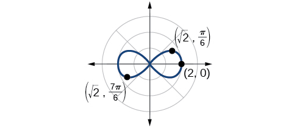
Analysis
Making a substitution such as is a common practice in mathematics because it can make calculations simpler. However, we must not forget to replace the substitution term with the original term at the end, and then solve for the unknown.
Some of the points on this graph may not show up using the Trace function on the TI-84 graphing calculator, and the calculator table may show an error for these same points of This is because there are no real square roots for these values of In other words, the corresponding r-values of are complex numbers because there is a negative number under the radical.
Investigating Rose Curves
The next type of polar equation produces a petal-like shape called a rose curve. Although the graphs look complex, a simple polar equation generates the pattern.
Sketching the Graph of a Rose Curve (n Even)
Sketch the graph of
Solution
Testing for symmetry, we find again that the symmetry tests do not tell the whole story. The graph is not only symmetric with respect to the polar axis, but also with respect to the line and the pole.
Now we will find the zeros. First make the substitution
The zero is The point is on the curve.
Next, we find the maximum We know that the maximum value of when Thus,
The point is on the curve.
The graph of the rose curve has unique properties, which are revealed in Table 8.
| 0 | |||||||
| 2 | 0 | −2 | 0 | 2 | 0 | −2 |
As when it makes sense to divide values in the table by units. A definite pattern emerges. Look at the range of r-values: 2, 0, −2, 0, 2, 0, −2, and so on. This represents the development of the curve one petal at a time. Starting at each petal extends out a distance of and then turns back to zero times for a total of eight petals. See the graph in Figure 16.
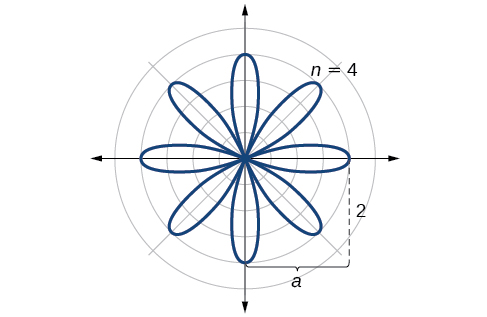
Analysis
When these curves are drawn, it is best to plot the points in order, as in the Table 8. This allows us to see how the graph hits a maximum (the tip of a petal), loops back crossing the pole, hits the opposite maximum, and loops back to the pole. The action is continuous until all the petals are drawn.
Sketching the Graph of a Rose Curve (n Odd)
Sketch the graph of
Solution
The graph of the equation shows symmetry with respect to the line Next, find the zeros and maximum. We will want to make the substitution
The maximum value is calculated at the angle where is a maximum. Therefore,
Thus, the maximum value of the polar equation is 2. This is the length of each petal. As the curve for odd yields the same number of petals as there will be five petals on the graph. See Figure 17.
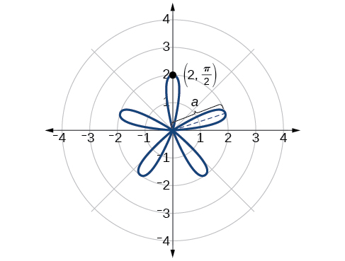
Create a table of values similar to Table 9.
| 0 | |||||||
| 0 | 1 | −1.73 | 2 | −1.73 | 1 | 0 |
Investigating the Archimedes’ Spiral
The final polar equation we will discuss is the Archimedes’ spiral, named for its discoverer, the Greek mathematician Archimedes (c. 287 BCE-c. 212 BCE), who is credited with numerous discoveries in the fields of geometry and mechanics.
Sketching the Graph of an Archimedes’ Spiral
Sketch the graph of over
Solution
As is equal to the plot of the Archimedes’ spiral begins at the pole at the point (0, 0). While the graph hints of symmetry, there is no formal symmetry with regard to passing the symmetry tests. Further, there is no maximum value, unless the domain is restricted.
Create a table such as Table 10.
| 0.785 | 1.57 | 3.14 | 4.71 | 5.50 | 6.28 |
Notice that the r-values are just the decimal form of the angle measured in radians. We can see them on a graph in Figure 19.
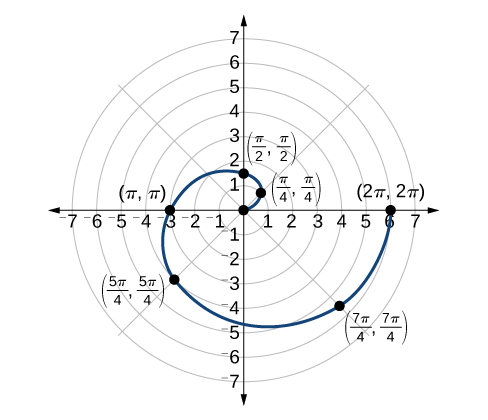
Analysis
The domain of this polar curve is In general, however, the domain of this function is Graphing the equation of the Archimedes’ spiral is rather simple, although the image makes it seem like it would be complex.
Summary of Curves
We have explored a number of seemingly complex polar curves in this section. Figure 20 and Figure 21 summarize the graphs and equations for each of these curves.

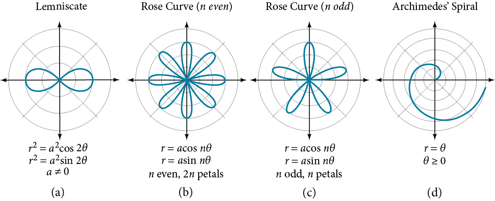
Key Concepts
- It is easier to graph polar equations if we can test the equations for symmetry with respect to the line the polar axis, or the pole.
- There are three symmetry tests that indicate whether the graph of a polar equation will exhibit symmetry. If an equation fails a symmetry test, the graph may or may not exhibit symmetry. See Example 1.
- Polar equations may be graphed by making a table of values for and
- The maximum value of a polar equation is found by substituting the value that leads to the maximum value of the trigonometric expression.
- The zeros of a polar equation are found by setting and solving for See Example 2.
- Some formulas that produce the graph of a circle in polar coordinates are given by and See Example 3.
- The formulas that produce the graphs of a cardioid are given by and for and See Example 4.
- The formulas that produce the graphs of a one-loop limaçon are given by and for See Example 5.
- The formulas that produce the graphs of an inner-loop limaçon are given by and for and See Example 6.
- The formulas that produce the graphs of a lemniscates are given by and where See Example 7.
- The formulas that produce the graphs of rose curves are given by and where if is even, there are petals, and if is odd, there are petals. See Example 8 and Example 9.
- The formula that produces the graph of an Archimedes’ spiral is given by See Example 10.
Section Exercises
Verbal
Describe the three types of symmetry in polar graphs, and compare them to the symmetry of the Cartesian plane.
Solution
Symmetry with respect to the polar axis is similar to symmetry about the -axis, symmetry with respect to the pole is similar to symmetry about the origin, and symmetric with respect to the line is similar to symmetry about the -axis.
Which of the three types of symmetries for polar graphs correspond to the symmetries with respect to the x-axis, y-axis, and origin?
What are the steps to follow when graphing polar equations?
Solution
Test for symmetry; find zeros, intercepts, and maxima; make a table of values. Decide the general type of graph, cardioid, limaçon, lemniscate, etc., then plot points at and and sketch the graph.
Describe the shapes of the graphs of cardioids, limaçons, and lemniscates.
What part of the equation determines the shape of the graph of a polar equation?
Solution
The shape of the polar graph is determined by whether or not it includes a sine, a cosine, and constants in the equation.
Graphical
For the following exercises, test the equation for symmetry.
Solution
symmetric with respect to the polar axis
Solution
symmetric with respect to the polar axis, symmetric with respect to the line symmetric with respect to the pole
Solution
symmetric with respect to the line
Solution
Symmetric with respect to line (y-axis)
Solution
symmetric with respect to the pole
For the following exercises, graph the polar equation. Identify the name of the shape.
Solution
circle 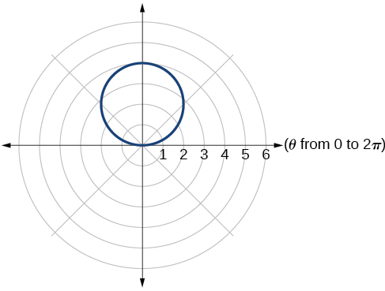
Solution
cardioid
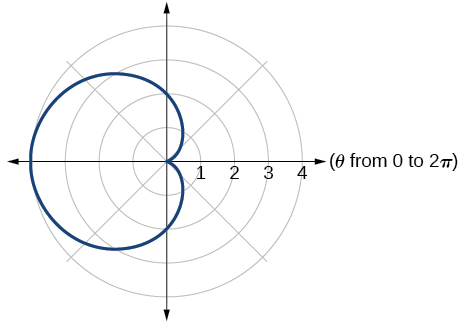
Solution
cardioid
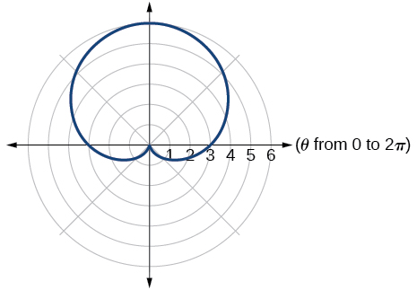
Solution
one-loop/dimpled limaçon
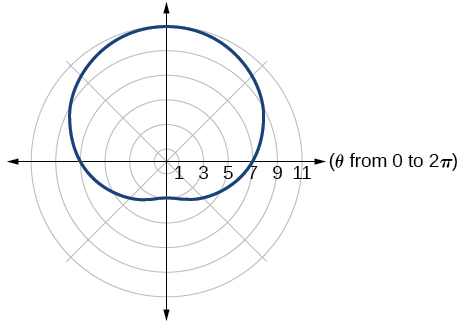
Solution
one-loop/dimpled limaçon
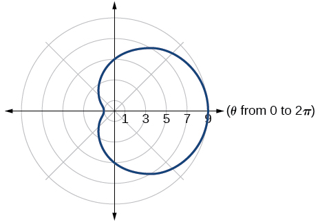
Solution
inner loop/two-loop limaçon
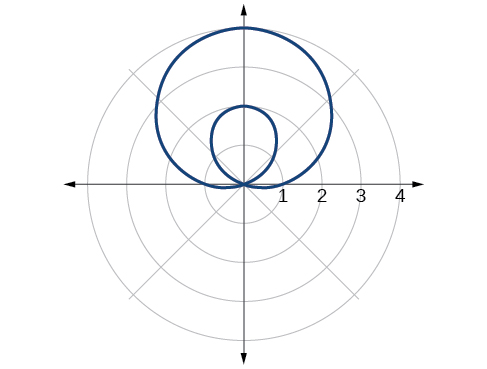
Solution
inner loop/two-loop limaçon
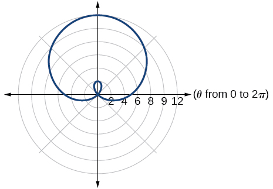
Solution
inner loop/two-loop limaçon
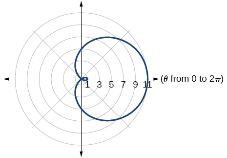
Solution
lemniscate
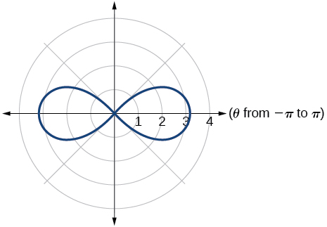
Solution
lemniscate
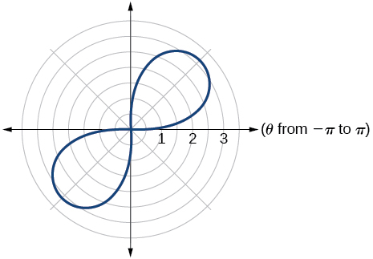
Solution
rose curve
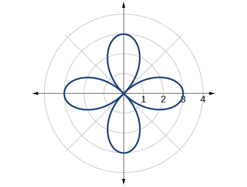
Solution
rose curve
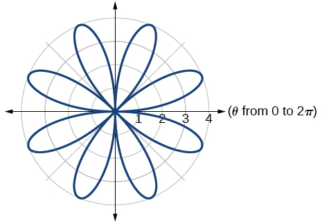
Solution
Archimedes’ spiral
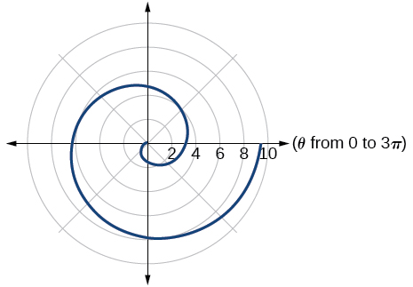
Solution
Archimedes’ spiral
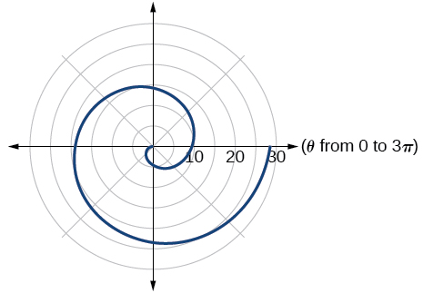
Technology
For the following exercises, use a graphing calculator to sketch the graph of the polar equation.
Solution
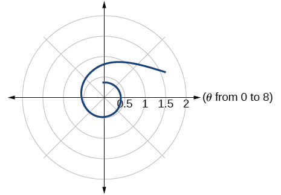
a cissoid
, a hippopede
Solution
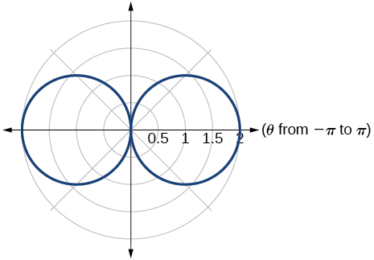
Solution
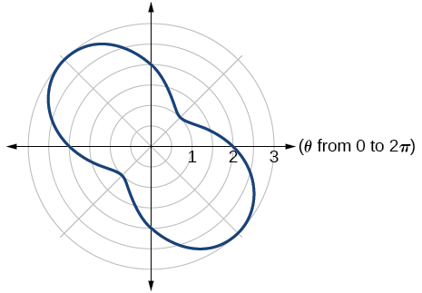
Solution
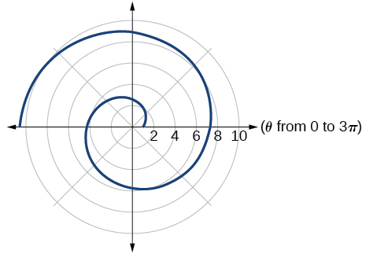
Solution
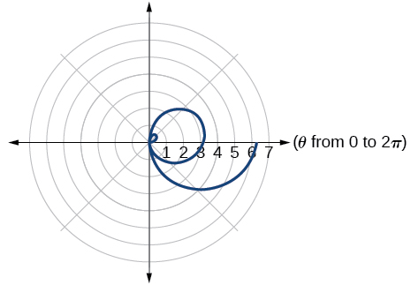
For the following exercises, use a graphing utility to graph each pair of polar equations on a domain of and then explain the differences shown in the graphs.
Solution
They are both spirals, but not quite the same.
Solution
Both graphs are curves with 2 loops. The equation with a coefficient of has two loops on the left, the equation with a coefficient of 2 has two loops side by side. Graph these from 0 to to get a better picture.
On a graphing utility, graph on , , , , , , and , Describe the effect of increasing the width of the domain.
Solution
When the width of the domain is increased, more petals of the flower are visible.
On a graphing utility, graph and sketch on
On a graphing utility, graph each polar equation. Explain the similarities and differences you observe in the graphs.
Solution
The graphs are three-petal, rose curves. The larger the coefficient, the greater the curve’s distance from the pole.
On a graphing utility, graph each polar equation. Explain the similarities and differences you observe in the graphs.
On a graphing utility, graph each polar equation. Explain the similarities and differences you observe in the graphs.
Solution
The graphs are spirals. The smaller the coefficient, the tighter the spiral.
Extensions
For the following exercises, draw each polar equation on the same set of polar axes, and find the points of intersection.
Solution
Solution
,
Solution
Solution
and
,
Analysis
Using a graphing calculator, we can see that the equation is a circle centered at with radius and is indeed symmetric to the line We can also see that the graph is not symmetric with the polar axis or the pole. See Figure 3.
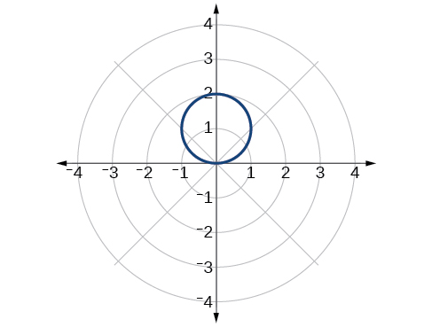